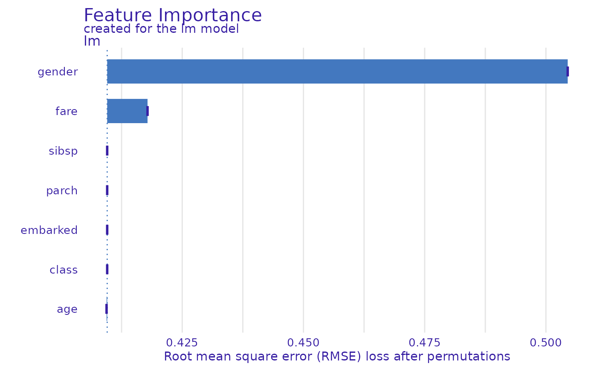

This function calculates permutation based feature importance. For this reason it is also called the Variable Dropout Plot.
Usage
feature_importance(x, ...)
# S3 method for explainer
feature_importance(
x,
loss_function = DALEX::loss_root_mean_square,
...,
type = c("raw", "ratio", "difference"),
n_sample = NULL,
B = 10,
variables = NULL,
variable_groups = NULL,
N = n_sample,
label = NULL
)
# S3 method for default
feature_importance(
x,
data,
y,
predict_function = predict,
loss_function = DALEX::loss_root_mean_square,
...,
label = class(x)[1],
type = c("raw", "ratio", "difference"),
n_sample = NULL,
B = 10,
variables = NULL,
N = n_sample,
variable_groups = NULL,
perm_dim = NULL,
comb_dims = FALSE
)Arguments
- x
an explainer created with function
DALEX::explain(), or a model to be explained.- ...
other parameters passed to
predict_function.- loss_function
a function thet will be used to assess variable importance.
- type
character, type of transformation that should be applied for dropout loss. "raw" results raw drop losses, "ratio" returns
drop_loss / drop_loss_full_modelwhile "difference" returnsdrop_loss - drop_loss_full_model.- n_sample
alias for
Nheld for backwards compatibility. number of observations that should be sampled for calculation of variable importance.- B
integer, number of permutation rounds to perform on each variable. By default it's
10.- variables
vector of variables or a list of vectors for multiinput models. If
NULLthen variable importance will be tested for each variable from thedataseparately. By defaultNULL- variable_groups
list of variables names vectors or a list of vectors for multiinput models. This is for testing joint variable importance. If
NULLthen variable importance will be tested separately forvariables. By defaultNULL. If specified then it will overridevariables,perm_dimandcomb_dims.- N
number of observations that should be sampled for calculation of variable importance. If
NULLthen variable importance will be calculated on whole dataset (no sampling).- label
name of the model. By default it's extracted from the
classattribute of the model.- data
validation dataset, will be extracted from
xif it's an explainer. Can be a list of arrays for multiinput models. NOTE: It is safer when target variable is not present in thedata.- y
true labels for
data, will be extracted fromxif it's an explainer.- predict_function
predict function, will be extracted from
xif it's an explainer.- perm_dim
the dimensions to perform the permutations when
datais a 3d array (e.g. [case, time, variable]). Ifperm_dim = 2:3, it calculates the importance for each variable in the 2nd and 3rd dimensions. For multiinput models, a list of dimensions in the same order than indata. IfNULL, the default, take all dimensions except the first one (i.e. rows) which correspond to cases.- comb_dims
if
TRUE, do the permutations for each combination of the levels of the variables from 2nd and 3rd dimensions for input data with 3 dimensions. By default,FALSE.
Details
Find more details in the Feature Importance Chapter.
References
Explanatory Model Analysis. Explore, Explain, and Examine Predictive Models. https://ema.drwhy.ai/
Examples
library("DALEX")
#> Welcome to DALEX (version: 2.4.3).
#> Find examples and detailed introduction at: http://ema.drwhy.ai/
#> Additional features will be available after installation of: ggpubr.
#> Use 'install_dependencies()' to get all suggested dependencies
#>
#> Attaching package: ‘DALEX’
#> The following object is masked from ‘package:NNTools’:
#>
#> feature_importance
library("ingredients")
#>
#> Attaching package: ‘ingredients’
#> The following object is masked from ‘package:DALEX’:
#>
#> feature_importance
#> The following object is masked from ‘package:NNTools’:
#>
#> feature_importance
model_titanic_glm <- glm(survived ~ gender + age + fare,
data = titanic_imputed, family = "binomial")
explain_titanic_glm <- explain(model_titanic_glm,
data = titanic_imputed[,-8],
y = titanic_imputed[,8])
#> Preparation of a new explainer is initiated
#> -> model label : lm ( default )
#> -> data : 2207 rows 7 cols
#> -> target variable : 2207 values
#> -> predict function : yhat.glm will be used ( default )
#> -> predicted values : No value for predict function target column. ( default )
#> -> model_info : package stats , ver. 4.3.2 , task classification ( default )
#> -> predicted values : numerical, min = 0.1490412 , mean = 0.3221568 , max = 0.9878987
#> -> residual function : difference between y and yhat ( default )
#> -> residuals : numerical, min = -0.8898433 , mean = 4.165191e-13 , max = 0.8448637
#> A new explainer has been created!
fi_glm <- feature_importance(explain_titanic_glm, B = 1)
plot(fi_glm)

if (FALSE) {
fi_glm_joint1 <- feature_importance(explain_titanic_glm,
variable_groups = list("demographics" = c("gender", "age"),
"ticket_type" = c("fare")),
label = "lm 2 groups")
plot(fi_glm_joint1)
fi_glm_joint2 <- feature_importance(explain_titanic_glm,
variable_groups = list("demographics" = c("gender", "age"),
"wealth" = c("fare", "class"),
"family" = c("sibsp", "parch"),
"embarked" = "embarked"),
label = "lm 5 groups")
plot(fi_glm_joint2, fi_glm_joint1)
library("ranger")
model_titanic_rf <- ranger(survived ~., data = titanic_imputed, probability = TRUE)
explain_titanic_rf <- explain(model_titanic_rf,
data = titanic_imputed[,-8],
y = titanic_imputed[,8],
label = "ranger forest",
verbose = FALSE)
fi_rf <- feature_importance(explain_titanic_rf)
plot(fi_rf)
fi_rf <- feature_importance(explain_titanic_rf, B = 6) # 6 replications
plot(fi_rf)
fi_rf_group <- feature_importance(explain_titanic_rf,
variable_groups = list("demographics" = c("gender", "age"),
"wealth" = c("fare", "class"),
"family" = c("sibsp", "parch"),
"embarked" = "embarked"),
label = "rf 4 groups")
plot(fi_rf_group, fi_rf)
HR_rf_model <- ranger(status ~., data = HR, probability = TRUE)
explainer_rf <- explain(HR_rf_model, data = HR, y = HR$status,
model_info = list(type = 'multiclass'))
fi_rf <- feature_importance(explainer_rf, type = "raw",
loss_function = DALEX::loss_cross_entropy)
head(fi_rf)
plot(fi_rf)
HR_glm_model <- glm(status == "fired"~., data = HR, family = "binomial")
explainer_glm <- explain(HR_glm_model, data = HR, y = as.numeric(HR$status == "fired"))
fi_glm <- feature_importance(explainer_glm, type = "raw",
loss_function = DALEX::loss_root_mean_square)
head(fi_glm)
plot(fi_glm)
}